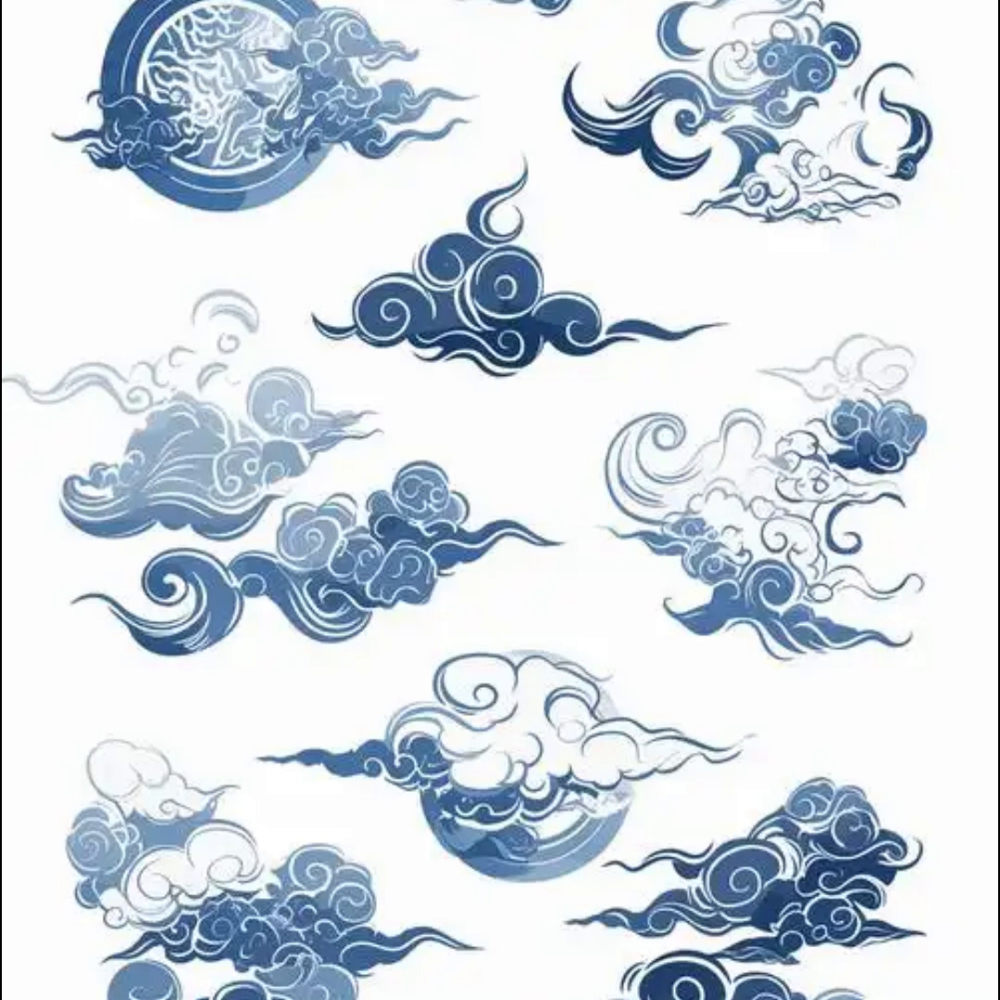
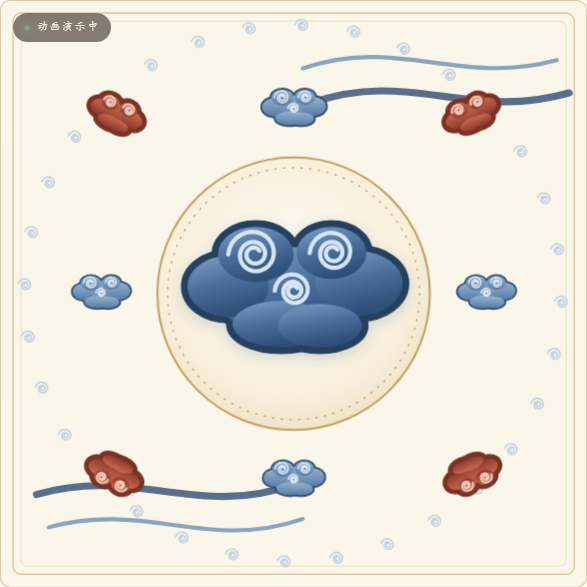

01 · 文本提示
中国传统云纹，青花瓷白描风格，单一靛蓝色调，环形团花构图，线条流畅回旋，米白底，无文字
纹样载入中
纹以载道 · 观纹识美
云纹，是中国传统装饰纹样中最为悠久的图案之一。
从一段文本提示，到一件可交互动效 —— AIGC 承担素材生成，人工承担考据、转译与交互实现。
中国传统云纹，青花瓷白描风格，单一靛蓝色调，环形团花构图，线条流畅回旋，米白底，无文字


| 环节 | 工具类型 | 产出 |
|---|---|---|
| 图像生成 | 文生图模型 | 云纹母题参考图 |
| 视频生成 | 图生视频模型 | 云纹动态短片 |
| 语音合成 | TTS 配音 | 36 秒解说音轨 |
| 文本生成 | 对话式大模型 | 提示词 · 文案初稿 |
| 辅助编程 | AI 编程助手 | 页面结构与动画引擎 |